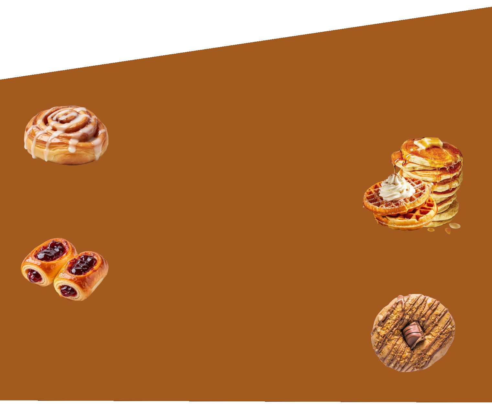

The iced americano has a deep, dark brown color with visible ice and a thick, bubbly foam layer on top. The drink appears strong and bold, with no milk, giving it a more intense coffee flavor. The condensation on the cup shows it’s very cold and refreshing.
Iced Cappuccino
An iced cappuccino is a cold, creamy coffee drink made with chilled espresso or coffee, milk, and ice, often topped with a light, frothy foam. It has a smooth texture with a balanced taste slightly sweet, rich, and refreshing making it a popular choice for a cool caffeine boost.
Biscoff Latte
A Biscoff latte is a smooth, creamy latte infused with the rich, caramelized flavor of Biscoff spread. It’s made with espresso and steamed milk, just like a regular latte, but with melted Biscoff blended in for a warm, spiced sweetness. The top can feature latte art or a light drizzle of Biscoff, adding both visual appeal and extra flavor.
Marchmellow Cappuccino
A marshmallow cappuccino is a rich, hot cappuccino topped with soft, melted marshmallows instead of (or alongside) the usual foam. The espresso base stays bold and smooth, while the marshmallows add a sweet, creamy layer that slowly melts into the drink. As they soften, they create a slightly frothy, dessert-like texture with a warm, sugary finish.

Pasteries
Hot Cinnamin Roll
A hot cinnamon roll is made with soft, freshly baked dough layered with brown sugar, cinnamon, and butter, then rolled into thick spirals and baked until golden. It’s finished with a smooth vanilla glaze that melts over the warm pastry, adding a sweet, creamy touch. The combination of warm spices, rich butter, and soft texture creates a comforting, bakery-style treat.
Waffles & Pancakes
Our waffles and pancakes are made from a rich batter of flour, eggs, milk, and butter, cooked fresh to order. Waffles are crisp on the outside with a soft interior and deep pockets for syrup, while pancakes are light, fluffy, and evenly golden. Served with classic toppings like maple syrup, fresh fruit, or whipped cream, they offer a warm and satisfying café-style experience.
Donuts
Our donuts are made from light, airy dough that’s fried to a perfect golden brown and finished with a variety of toppings. They can be coated in classic sugar, dipped in a sweet glaze, or topped with rich icing and sprinkles. Soft on the inside with a slightly crisp exterior, each donut delivers a balanced mix of sweetness and texture.
Danishes
Danish pastries are crafted with buttery, laminated dough that bakes into delicate, flaky layers. Each one is filled with ingredients like sweet cream cheese, fruit preserves, or smooth custard, then lightly glazed for a subtle sweetness. The result is a pastry that’s crisp on the outside, soft in the center, and rich without being too heavy.